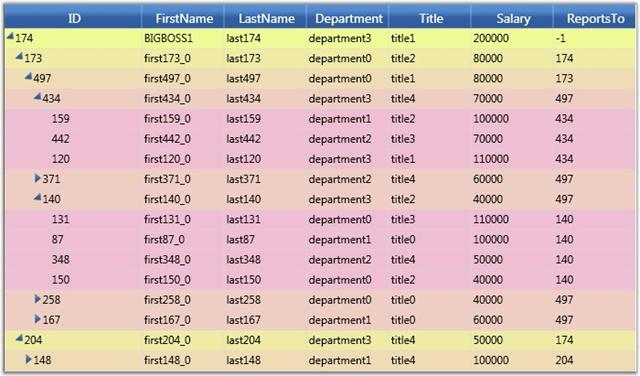

In addition to the GridTreeControl.VisualStyle property, there is a GridTreeControl.LevelStyles collection that enables you to specify a GridStyleInfo object to customize the appearance of all the cells at a particular level.
The following code example illustrates how to apply LevelStyles to the Grid Tree.
|
[C#]
// Set some miscellaneous level colors so they are easily seen (just set up to 6 levels...). byte k = 150; byte k1 = 250; for (int i = -1; i < 7; ++i) { GridStyleInfo style = new GridStyleInfo(); style.Background = new SolidColorBrush(Color.FromArgb(255, 239, k1, k)); gridTreeControl1.LevelStyles.Add(style); k += 15; k1 -= 15; } |
The following screen shot shows the back color set on a level-by-level basis, with the header cells styles set by using the VisualStyle property.

Figure 259: Level Styles
Grid cell background is customized on a level-by-level basis.